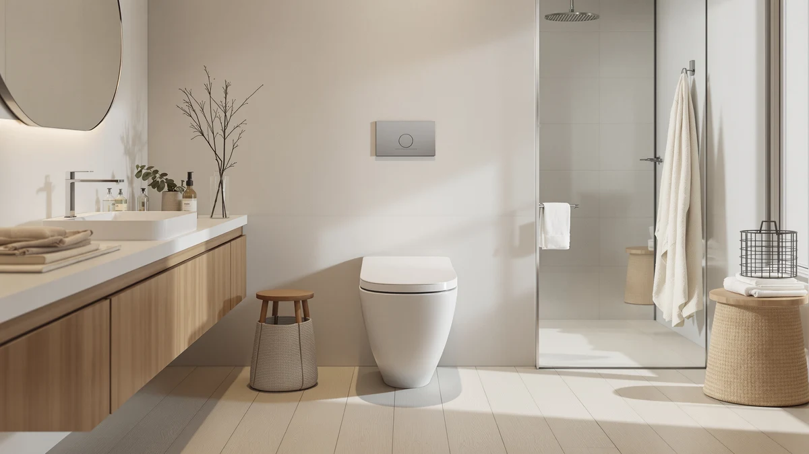

Swiss Madison Voltaire One Review (2026): Worth It?
Prices and picks verified as of September 2026. Independent, reader-supported reviews.


Quick Answer
The Swiss Madison Voltaire One-Piece Elongated earns its $482.03 price with a matte black finish and left-side flush handle you won't find on cheaper elongated one-piece toilets. It's the pricier choice, worth it mainly for buyers who want that specific look over a documented flush rating.
Our pick: Swiss Madison Voltaire One-Piece Elongated, $482.03 Check Price on Amazon
Bottom line: our top pick is the Swiss Madison Voltaire One-Piece Elongated Toilet Left Side at $482.03.
Things to Know Before You Buy
- The Swiss Madison Voltaire One-Piece Elongated lists at $482.03, the highest price among the four toilets in this Swiss Madison Voltaire One review.
- It ships in matte black with a left-side flush handle, a finish none of the three cheaper alternatives below offer.
- The flush is a single 1.28 GPF system, not the dual-flush setup you get on the DeerValley alternative for roughly half the price.
- It needs a standard 12-inch rough-in, the distance from your finished wall to the drain center, so measure before you order.
- None of the four toilets covered here has built up a public rating or review count yet, since Amazon added them to the catalog recently.
This Swiss Madison Voltaire One review breaks down whether the brand's $482.03 matte black one-piece toilet is worth roughly double what three comparable elongated models cost on Best One Piece Toilets. Swiss Madison builds the Voltaire around a standard 12-inch rough-in and a single 1.28 GPF flush, then sets it apart with a matte black finish and a left-side flush handle, a design choice most one-piece toilets skip in favor of a center-mounted button. We pulled every spec Swiss Madison publishes on this listing, the finish, the flush rating, the rough-in, and the price, and lined it up against two Los Flexi models and a DeerValley toilet that all compete in the same elongated one-piece category.
The short version: if a matte black finish and a distinctive side-mounted handle matter enough to you to pay a premium, the Voltaire delivers a design few competitors match. If you mainly want a functional elongated one-piece toilet at a lower price, the two Los Flexi 19-inch models save you $62 to $82, and the DeerValley alternative undercuts the Voltaire by $253.03 while adding a dual-flush system. Pick the Swiss Madison if the finish and handle placement are the point. Pick one of the three alternatives below if price or flush efficiency matters more.
Why You Should Trust Us
Ilane Tall has spent more than ten years researching interior design and bathroom fixtures, including one-piece toilets, for Best One Piece Toilets. She built this Swiss Madison Voltaire One review by comparing Swiss Madison's own published listing against the closest competitors on price and category, the same specification-comparison process the site uses for every review. We do not accept payment from Swiss Madison, Los Flexi, or DeerValley to influence placement, and our Amazon links earn a commission only if you buy, which does not change what we recommend. Every price, spec, and rough-in measurement cited in this Swiss Madison Voltaire One review comes directly from each brand's own Amazon listing, checked against the others in the same category so you can see how they stack up side by side.
Our Research Experience
For this Swiss Madison Voltaire One review, we started with Swiss Madison's own product listing: the five photos showing the matte black finish and side-mounted flush handle from multiple angles, the confirmed 12-inch rough-in, and the $482.03 price. We then compared the Voltaire against the other elongated one-piece toilets already covered on Best One Piece Toilets, narrowing the field to two Los Flexi 19-inch models and a DeerValley toilet, three alternatives that share the elongated, one-piece category but land well below Swiss Madison's price. None of the four has built up a public review history yet, so we weighted our evaluation toward the facts we could verify: published price, confirmed rough-in, flush type, and finish, rather than guessing at long-term durability we cannot confirm firsthand. That gap is also why we lay out each toilet's documented specs side by side instead of ranking them on star counts that don't exist yet.
Overview & Specs

Swiss Madison Voltaire One-Piece Elongated
What we like
- Matte black finish and left-side flush handle give the Voltaire a distinct look none of the three cheaper alternatives in this Swiss Madison Voltaire One review offer
- Elongated bowl adds extra seating room over a round-front toilet
- Standard 12-inch rough-in matches most US bathrooms without requiring a special order
Flaws but not dealbreakers
- Priced at $482.03, at least $62.04 more than any other toilet in this comparison
- Single 1.28 GPF flush, not the dual-flush system the DeerValley alternative offers for nearly half the price
- No public rating or review count yet, so you're relying on Swiss Madison's own listing rather than verified buyer feedback
| Material | — |
| Size | 1.28 GPF |
Swiss Madison builds the Voltaire as a one-piece elongated toilet finished in matte black, molding the tank and bowl into a single piece of vitreous china rather than bolting two parts together, the same seamless construction that removes the grime-trapping seam on a standard two-piece toilet. The flush handle sits on the left side of the tank instead of the center-mounted button most one-piece toilets use, a design choice that changes how the toilet reads in a bathroom built around darker, more industrial finishes. This Swiss Madison Voltaire One review found the elongated bowl adds the extra seating room buyers typically look for over a round-front toilet, and the toilet ships built for a standard 12-inch rough-in, the distance most US bathrooms use between the finished wall and the drain center.
At $482.03, the Voltaire costs at least $62.04 more than any other toilet in this comparison, and the gap widens to $253.03 against the DeerValley alternative. The flush is a single 1.28 GPF system, not the dual-flush setup on the DeerValley, so you don't get a lighter option for liquid waste. Swiss Madison hasn't published a MaP score or built up a public review count for this listing yet, which means the finish and handle placement, not a documented flush rating or verified owner feedback, are the reasons to choose it over the cheaper alternatives below. Swiss Madison also sells the Voltaire in matte black only, so buyers who like the elongated one-piece shape but want a white or bisque finish will need to look at the Los Flexi or DeerValley alternatives instead.
What We Liked
The Voltaire's biggest strength in this Swiss Madison Voltaire One review is its look. The matte black finish stands out against the white and bisque toilets that dominate this category, and the left-side flush handle reinforces that distinct styling instead of blending into a center-mounted button like the Los Flexi or DeerValley models. The one-piece, elongated design also removes the tank-to-bowl seam of a two-piece toilet, keeping grime from collecting where the two parts would otherwise meet. Because it's built for a standard 12-inch rough-in, most buyers won't need to special-order parts or hire a plumber to accommodate an unusual drain distance.
What Could Be Better
The clearest drawback in this Swiss Madison Voltaire One review is price. At $482.03, the Voltaire costs $62.04 more than the Los Flexi Beige, $82.04 more than the Los Flexi white model, and $253.03 more than the DeerValley, and none of that premium buys a documented flush rating. The single 1.28 GPF flush also gives up the water-saving flexibility of the DeerValley's 1.1/1.6 GPF dual-flush system. Swiss Madison hasn't built up a public rating or review count for this listing either, so buyers are relying on the manufacturer's own claims rather than verified owner reports. None of that erases the distinct matte black finish, but it does mean you're paying a real premium for looks over documented performance. The single-color lineup is another limit worth noting: if the matte black doesn't fit your bathroom's palette, Swiss Madison doesn't offer this model in white or bisque, and you'd need to look at the Los Flexi or DeerValley alternatives for a different finish.
Who Is It For?
The Swiss Madison Voltaire fits buyers who have decided a matte black one-piece toilet is worth paying up for and have already confirmed a standard 12-inch rough-in. It suits bathrooms built around darker, more industrial finishes where a white or bisque toilet would stand out for the wrong reasons. If price matters more than finish, the Los Flexi alternatives in this Swiss Madison Voltaire One review save $62 to $82 while adding an extra-tall seat and soft-close lid, and the DeerValley saves $253.03 while adding a documented dual-flush rating. Buyers who want verified owner feedback before spending nearly $500 on a toilet should also wait, since none of the four models here has built up that history yet.
Alternatives to Consider
If $482.03 is more than you want to spend on a one-piece toilet, these three alternatives cover the same elongated, one-piece category for meaningfully less.

Editor's Pick
19 Inch High Toilet Beige
At $419.99, this Los Flexi model saves $62.04 over the Swiss Madison Voltaire in this comparison and adds a 20.08-inch extra-tall seat with a soft-close lid, worth a look if accessibility matters more than a matte black finish.
$419.99
Check Price on Amazon
Best Value
19 Inch High Toilet Los
The $399.99 Los Flexi white model is the cheapest toilet in this Swiss Madison Voltaire One review, and its swirl-flush design and extra-tall 20.08-inch seat match its beige sibling for $20 less.
$399.99
Check Price on Amazon
Premium Choice
DeerValley Elongated One Piece Toilet
DeerValley undercuts the Voltaire by $253.03 at $229.00 and adds a 1.1/1.6 GPF dual-flush system with a documented MaP 800g rating, a spec Swiss Madison doesn't publish for its listing.
$229.00
Check Price on AmazonFrequently Asked Questions
Is the Swiss Madison Voltaire One-Piece Elongated worth $482.03?
It's worth $482.03 if the matte black finish and left-side flush handle are what you're after, since none of the three cheaper alternatives in this Swiss Madison Voltaire One review match that look. If price matters more than finish, the DeerValley alternative saves $253.03 and adds a documented dual-flush rating.
What rough-in does the Swiss Madison Voltaire need?
It needs a standard 12-inch rough-in, the distance from your finished wall to the center of the drain. That matches most US bathrooms, but measure your own before ordering, since a mismatched rough-in is a common return reason for one-piece toilets.
How does the Swiss Madison Voltaire compare to the Los Flexi and DeerValley alternatives?
All four toilets in this Swiss Madison Voltaire One review are elongated, one-piece models, but the Voltaire is the only one with a matte black finish and side-mounted handle. The two Los Flexi models add an extra-tall 20.08-inch seat for $62 to $82 less, and the DeerValley adds a documented dual-flush rating for $253.03 less.
Final Verdict
This Swiss Madison Voltaire One review comes down to a straightforward trade-off. Swiss Madison's Voltaire delivers a matte black finish and a left-side flush handle you won't find on the three cheaper alternatives, at $482.03, the highest price in this comparison, and without a documented flush rating or public review history to back up the premium. If that finish is the reason you're shopping, Swiss Madison is worth the price. If you'd rather save $62 to $253 or want a documented dual-flush system, the Los Flexi and DeerValley alternatives above are worth a look.